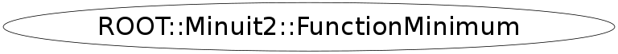

Function Members (Methods)
public:
| ~FunctionMinimum() | |
| void | Add(const ROOT::Minuit2::MinimumState& state) |
| void | Add(const ROOT::Minuit2::MinimumState& state, ROOT::Minuit2::FunctionMinimum::MnAboveMaxEdm) |
| double | Edm() const |
| const ROOT::Minuit2::MinimumError& | Error() const |
| ROOT::Minuit2::FunctionMinimum | FunctionMinimum(const ROOT::Minuit2::FunctionMinimum& min) |
| ROOT::Minuit2::FunctionMinimum | FunctionMinimum(const ROOT::Minuit2::MinimumSeed& seed, double up) |
| ROOT::Minuit2::FunctionMinimum | FunctionMinimum(const ROOT::Minuit2::MinimumSeed& seed, const vector<MinimumState>& states, double up) |
| ROOT::Minuit2::FunctionMinimum | FunctionMinimum(const ROOT::Minuit2::MinimumSeed& seed, const vector<MinimumState>& states, double up, ROOT::Minuit2::FunctionMinimum::MnReachedCallLimit) |
| ROOT::Minuit2::FunctionMinimum | FunctionMinimum(const ROOT::Minuit2::MinimumSeed& seed, const vector<MinimumState>& states, double up, ROOT::Minuit2::FunctionMinimum::MnAboveMaxEdm) |
| double | Fval() const |
| const ROOT::Minuit2::FunctionGradient& | Grad() const |
| bool | HasAccurateCovar() const |
| bool | HasCovariance() const |
| bool | HasMadePosDefCovar() const |
| bool | HasPosDefCovar() const |
| bool | HasReachedCallLimit() const |
| bool | HasValidCovariance() const |
| bool | HasValidParameters() const |
| bool | HesseFailed() const |
| bool | IsAboveMaxEdm() const |
| bool | IsValid() const |
| int | NFcn() const |
| ROOT::Minuit2::FunctionMinimum& | operator=(const ROOT::Minuit2::FunctionMinimum& min) |
| const ROOT::Minuit2::MinimumParameters& | Parameters() const |
| const ROOT::Minuit2::MinimumSeed& | Seed() const |
| void | SetErrorDef(double up) |
| const ROOT::Minuit2::MinimumState& | State() const |
| const vector<ROOT::Minuit2::MinimumState>& | States() const |
| double | Up() const |
| const ROOT::Minuit2::MnUserCovariance& | UserCovariance() const |
| const ROOT::Minuit2::MnUserParameters& | UserParameters() const |
| const ROOT::Minuit2::MnUserParameterState& | UserState() const |
Data Members
private:
| ROOT::Minuit2::FunctionMinimum::MnRefCountedPointer<BasicFunctionMinimum> | fData |
Class Charts
{kind=link}
{kind=link}
{kind=link}
{kind=link}

Function documentation
FunctionMinimum(const ROOT::Minuit2::MinimumSeed& seed, double up)
constructor from only MinimumSeed. Minimum is only from seed result not full minimization
{} FunctionMinimum(const ROOT::Minuit2::MinimumSeed& seed, const vector<MinimumState>& states, double up)
constructor at the end of a successfull minimization from seed and vector of states
{} FunctionMinimum(const ROOT::Minuit2::MinimumSeed& seed, const vector<MinimumState>& states, double up, ROOT::Minuit2::FunctionMinimum::MnReachedCallLimit )
constructor at the end of a failed minimization due to exceeding function call limit
{} FunctionMinimum(const ROOT::Minuit2::MinimumSeed& seed, const vector<MinimumState>& states, double up, ROOT::Minuit2::FunctionMinimum::MnAboveMaxEdm )
constructor at the end of a failed minimization due to edm above maximum value
{}FunctionMinimum& operator=(const ROOT::Minuit2::FunctionMinimum& min)
void Add(const ROOT::Minuit2::MinimumState& state, ROOT::Minuit2::FunctionMinimum::MnAboveMaxEdm )
add new state
return fData-> UserParameters()
return fData-> UserCovariance()